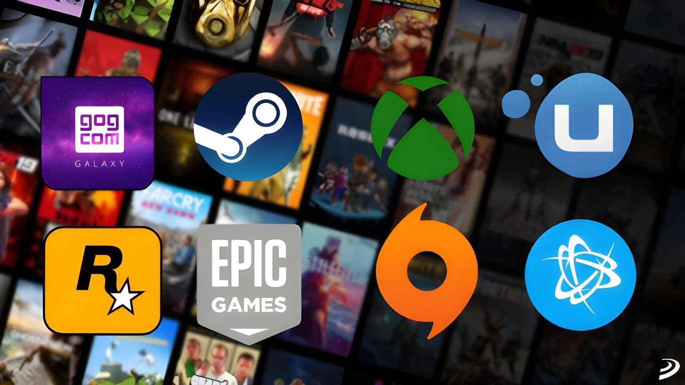

Rockstar podría expandir el mapa de GTA 6 utilizando una estrategia que no vemos desde GTA 4
3 de marzo de 2022
Spider-Man para PC corrige diversos errores en el trazado de rayos y mejora su estabilidad con el primer parche
31 de marzo de 2022

¿Por qué PC tiene tantas plataformas como Steam, si a nadie le gusta usar varios launchers distintos?
6 de enero de 2022
Genshin Impact presenta Sumeru y el resto de la Versión 3.0 en un video especial
7 de abril de 2022
Japón ya representa más de la mitad de las ganancias de Tower of Fantasy
3 de febrero de 2022
Noticias y lanzamientos de videojuegos destacados del mes: Stray, God of War Ragnarok, Xenoblade Chronicles 3
21 de febrero de 2022